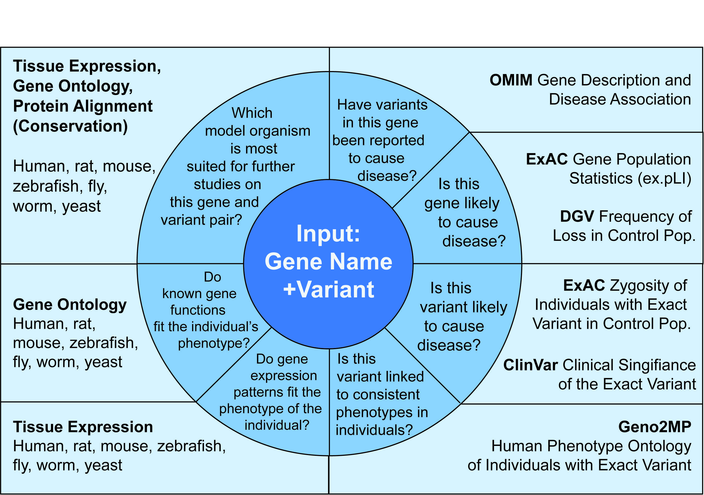

Please cite use of MARRVEL by:
Julia Wang*, Rami Al-Ouran*, Yanhui Hu*, Seon-Young Kim*, Ying-Wooi Wan, Michael F. Wangler, Shinya Yamamoto, Hsiao-Tuan Chao, Aram Comjean, Stephanie E. Mohr, UDN, Norbert Perrimon, Zhandong Liu, Hugo J. Bellen. “MARRVEL: Integration of Human and Model Organism Genetic Resources to Facilitate Functional Annotation of the Human Genome.” The American Journal of Human Genetics 100, 1–11, 2017 June 1. doi:10.1016/j.ajhg.2017.04.010
Julia Wang, Dongxue Mao, Fatima Fazal, Seon-Young Kim, Shinya Yamamoto, Hugo Bellen, and Zhandong Liu. "Using MARRVEL v1. 2 for Bioinformatics Analysis of Human Genes and Variant Pathogenicity." Current protocols in bioinformatics 67, no. 1 (2019). doi:10.3791/59542
Julia Wang, Zhandong Liu, Hugo J. Bellen, and Shinya Yamamoto. "Navigating MARRVEL, a Web-Based Tool that Integrates Human Genomics and Model Organism Genetics Information." Journal of visualized experiments: JoVE 150 (2019). doi:10.1002/cpbi.85
MARRVEL stands for Model organism Aggregated Resources for Rare Variant ExpLoration.
You can insert either a human variant (multiple formats allowed) and gene, or search for a single gene. You can select from five databases (OMIM, ExAC, Geno2MP, DGV and DECIPHER).
To search by non-human genes (ie. Mouse, fly, yeast, etc), start by clicking on the “Model Organisms Search Tab.” Select the model organism of your choice and enter the gene symbol. Clicking “Search” will bring you to a list of putative human orthologs. Click “MARRVEL it” when you have decided which human ortholog you would like information for.
Currently, the search field will accept the following nomenclature:
If you see no results across multiple databases, then we recommend that you first check if your variant coordinates, gene name, and reference nucleotide are correct by using UCSC Genome Browser on GRCh37/hg19 Assembly or Mutalyzer.
For amino acid changes, check your nomenclature at TransVar.
If these information are correct, then please submit a feedback report for our team to review.
GRCh 37 (hg19)
We used the OMIM API to retrieve OMIM data after obtaining the license from OMIM.
Ensembl GRCh37 REST API (http://grch37.rest.ensembl.org)
HGNC REST API (http://www.genenames.org/help/rest-web-service-help)
We search ClinVar by HGNC identifier for human gene and provide Variant, Location, Condition(s), Frequency, Clinical Significance, and Review Status. This data is updated every 2 weeks.
We downloaded the variant sites file in VCF format for release 0.3.1.
File available at: ExAC FTP(release 0.3.1)
ExAC database: http://exac.broadinstitute.org
Assembly: GRCh 37 (hg19)
We fetched data from gnomAD databse: http://gnomad.broadinstitute.org/
Assembly: GRCh 37 (hg19)
Directly from Monarch Gene page (https://monarchinitiative.org/gene/[HGNC:id]#compare)
Directly from IMPC Gene page (https://www.mousephenotype.org/data/genes/[MGI:id])
We downloaded the variant sites VCF file: “Geno2MP.variants.vcf”. The VCF file was last updated on October 10, 2016.
VCF file available at: http://geno2mp.gs.washington.edu/Geno2MP/#/terms
Geno2MP database: http://geno2mp.gs.washington.edu
Assembly: GRCh 37 (hg19)
Directly from Geno2MP website
Last update: Oct 15 15:46 UTC
We downloaded the DGV variants file available as a tab delimited text file.
File available at: http://dgv.tcag.ca/dgv/docs/GRCh37_hg19_variants_2016-05-15.txt
Release date: 2016-05-15
Database: http://dgv.tcag.ca/dgv/app/home
Assembly: GRCh 37 (hg19)
We downloaded the “Population Copy-Number Variation Frequencies” file on Sep-7-2016.
File available at: https://decipher.sanger.ac.uk/about#downloads/data
Database: https://decipher.sanger.ac.uk
Assembly: GRCh 37 (hg19)
We downloaded version 2.4.0 from https://github.com/zwdzwd/transvar
We downloaded version dbNSFP4.0b1a from https://sites.google.com/site/jpopgen/dbNSFP
Human:
EMBL-EBI QuickGO (ftp://ftp.ebi.ac.uk/pub/databases/GO/goa/HUMAN/goa_human.gaf.gz)
Date modified: 11/28/16, 9:35:00 AM (the file)
Rat:
FTP on RDG (ftp://ftp.rgd.mcw.edu/pub/ontology/annotated_rgd_objects_by_ontology/rattus_genes_go) Last update: Mar 3, 2017
Mouse:
MGI result page -> All GO Annotations -> GO Graph: the table below the graph (http://www.informatics.jax.org/marker/gograph/[MGI ID])
Last update: Nov 19 00:01 UTC
Zebrafish:
ZFIN result page -> GENE ONTOLOGY -> "GO Terms (all ?)" (http://zfin.org/action/marker/marker-go-view/[ZFIN ID])
Last update: Nov 18 21:56 UTC
Fly:
Directly from the FlyBase result page(http://flybase.org/reports/[flybase id].html)
Only "Terms Based on Experimental Evidence."
Last update: Oct 26 20:01 UTC
Worm:
WormBase REST API (http://www.wormbase.org/about/userguide/for_developers/API-REST/Go_term#0--10)
Last update: Nov 9 22:17 UTC
Budding Yeast:
Directly from the SGD result page (http://www.yeastgenome.org/locus/[SGD ID]/overview)
Last update: Nov 18 22:11 UTC
Fission Yeast:
Directly from the PomBase result page (http://www.pombase.org/spombe/result/[pombase id])
Last update: Nov 18 23:04 UTC
Human:
GTEx (http://www.gtexportal.org/static/datasets/gtex_analysis_v6p/rna_seq_data/GTEx_Analysis_v6p_RNA-seq_RNA-SeQCv1.1.8_gene_median_rpkm.gct.gz) V6
Ohters:
IMPC (https://www.mousephenotype.org)
Protein Atlas
http://www.proteinatlas.org/[ensembl ID].xml
Updated: Dec 14 17:18 UTC, 2016
Rat BodyMap: Yu, Y., Fuscoe, J.C., Zhao, C., Guo, C., Jia, M., Qing, T., Bannon, D.I., Lancashire, L., Bao, W., Du, T., et al. (2014). A rat RNA-Seq transcriptomic BodyMap across 11 organs and 4 developmental stages. Nat. Commun. 5, 3230.
MGI result page, "Mutations, Alleles, and Phenotypes" section, "Phenotype Overview”.
Last update: Nov 8 22:17 UTC
ZFIN downloadable data (http://zfin.org/downloads), "Expression data for wildtype fish"
Last update: 2016.11.07 (the file)
FlyBase result page -> FlyAtlas Anatomy Microarray -> download data (TSV)
Only when "Back-to-back Scales" or "Heatmap" is available.
Last update: Nov 7 18:52 UTC
Directly from DIOPT Best score page
Last update: Mar 6, 2017
Pharos API (https://pharos.nih.gov/api)
The Undiagnosed Disease Network's Model Organism Screening Center, in collaboration with Dr. Zhandong Liu's and Dr. Norbert Perrimon's bioinformatics teams developed MARRVEL as a public tool to efficiently analyze potentially pathogenic variants in patients with rare or undiagnosed diseases.
The three main pieces of information that we draw from OMIM are: gene function, associated phenotypes, and reported alleles. It is helpful to know if a gene is a part of a known Mendelian phenotype whose molecular basis is known (#entries). Genes without this knowledge are candidates for novel gene discovery and for genes that are this category if the patient's phenotype does not match the reported disease and phenotype as well as those of the patients in the literature, then this increases the opportunity to provide a phenotypic expansion.
ExAC contains more than 60,000 exomes and is, other than gnomAD (http://gnomad.broadinstitute.org/), the largest public collection of exomes that have been selected against individuals with severe early-onset Mendelian phenotypes. For MARRVEL’s purposes, ExAC serves as the best control population minor allele frequency. We are interested in two sets of outputs from ExAC. The first output is the gene-centric overview of the expected versus observed number of missense and loss of function alleles. A metric called pLI (probability of Loss of function intolerance) ranges between 0 and 1 is likely related to how essential both copies of a gene are before reproductive age. A pLI score of 1 means that this gene is very intolerant of any loss of function variants and is under selective constraint. The second output is data from ExAC that pertains to the specific variant.
gnomAd contains a total of 123,136 exome sequences and 15,496 whole-genome sequences from unrelated individuals sequenced as part of various disease-specific and population genetic studies. In MARRVEL we display the population frequencies that pertains to specific variant.
ClinVar is a public archive of reports of the relationships among human variations and phenotypes, with supporting evidence. Variants with interpretations reported by researchers and clinicians are valuable for analyzing how likely a variant is pathogenic.
Geno2MP is a collection of samples from the University of Washington Center for Mendelian Genetics. It contains about 5,000 exomes of affected individuals and unaffected relatives. This database links the phenotypic as well as mode of inheritance information to specific alleles. For phenotype, we focus on comparing the affected organ system of the patient to the affected individuals in Geno2MP. A match in allele, mode of inheritance, and phenotype provides an increased probability that the variant likely pathogenic. However, due to small sample size a negative association does not necessarily decrease a variant’s pathogenic priority.
To our knowledge, DGV is the largest public-access collection of structural variants from more than 54,000 individuals. The database includes samples of reportedly healthy individuals, at the time of ascertainment, from up to 72 different studies. Possible limitations to this data include variation in source and method of the data acquired the lack of information regarding incomplete penetrance of pathogenic CNVs, and whether individuals will develop associated diseases subsequent to data collection.
The data displayed on MARRVEL includes common variants from the control population. The data displayed includes structural variants that cover the genomic location of the input variant. DECIPHER also contains variant and phenotypic information for affected individuals.
DIOPT provided multiple protein sequence alignment of the best predicted orthologs in six model organisms against the protein sequence of the human gene of interest. The alignment will provide information on the conservation of specific amino acids as well as functional protein domains
We collected data from multiple model organism databases and provide a summary of the biological and genetic functions of the predicted orthologs derived by DIOPT.
One of many ways that users can use the data provided by MARRVEL is by following the user-driven analysis as depicted in the Figure below. 
You can report any errors and provide feedback by clicking on the ‘Feedback’ button which is displayed on the right side of our portal.